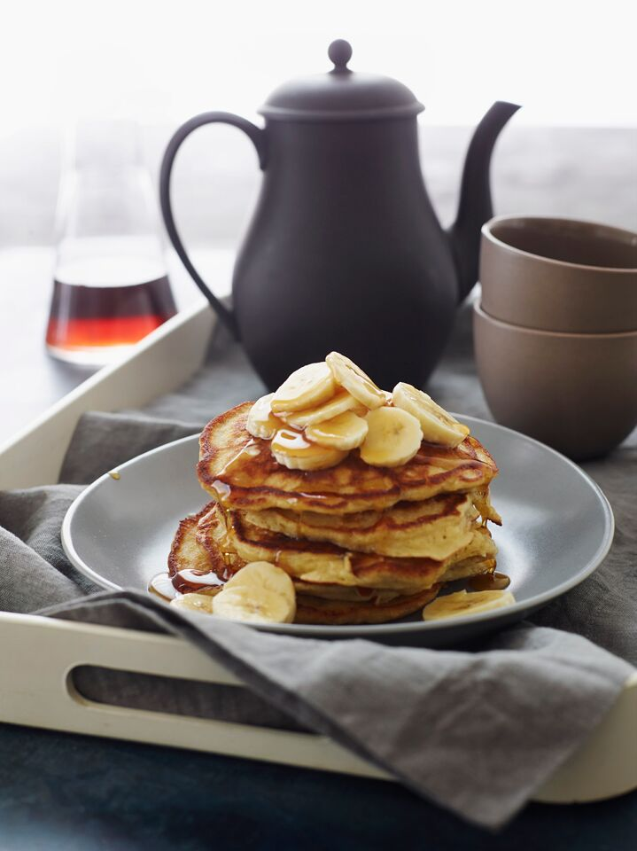

Banana Pancakes

Description
Start your morning off right with a stack of sweeet, delicious banana pancakes!
Ingredients
- 1-1/2 cups all purpose flour, spooned into measuring cup and leveled off
- 2 tablespoons sugar
- 2-1/2 teaspoons baking powder
- 1/2 teaspoon salt
- 1 small, over-ripe banana, peeled (the browner, the better)
- 2 large eggs
- 1 cup plus 2 tbsp. low fat milk
- 1/2 tsp. vanilla extract
- 3 tbsp. unsalted butter, melted
- Cooking spray (for pan)
- Maple syrup, confectioner's sugar, or any other toppings of your choice
Directions
- In a medium bowl, whisk together the flour, sugar, baking powder and salt.
- In a small bowl, mash the banana with a fork until almost smooth. Whisk in
the eggs, then add the milk and vanilla and whisk until well blended. Pour
the banana mixture and the melted butter into the flour mixture. Fold the
batter gently with a rubber spatula until just blended; do not over-mix. The
batter will be thick and lumpy.
- Set a griddle or non-stick pan over medium heat until hot. Put a pad of butter
and one tablespoon vegetable oil onto the griddle, and swirl it around. Drop
the batter by 1/4-cupfuls onto the griddle, spacing the pancakes about 2 inches
apart. Cook until a few holes form on top of each pancake and the underside is
golden brown, about 2 minutes. Flip the pancakes and cook until the bottom is
golden brown and the top is puffed, 1 to 2 minutes more. Using the spatula, transfer
the pancakes to a serving plate.
- Wipe the griddle clean with paper towels, add more butter and oil, and repeat with
the remaining batter. Serve the pancakes while still hot with maple syrup, sliced
bananas and confectioners' sugar if desired.